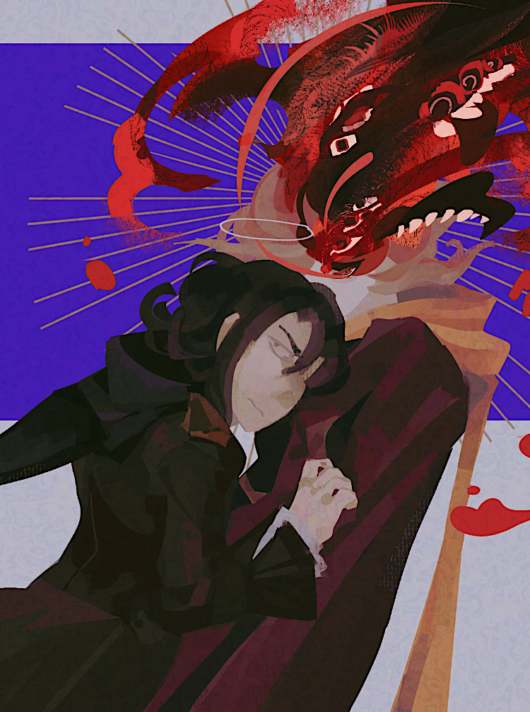
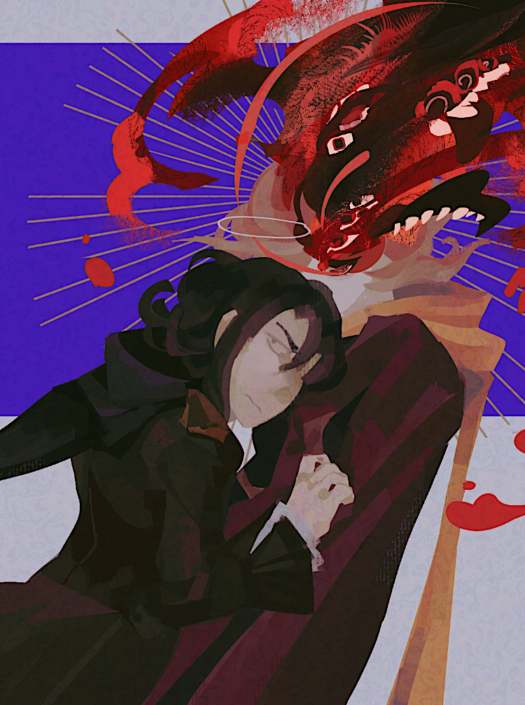

good things happen
creation date: may 29
characters featured: isra, callisto
callisra painting based on the song of the same title. lyrics rly reminded me of them

callisra painting based on the song of the same title. lyrics rly reminded me of them
